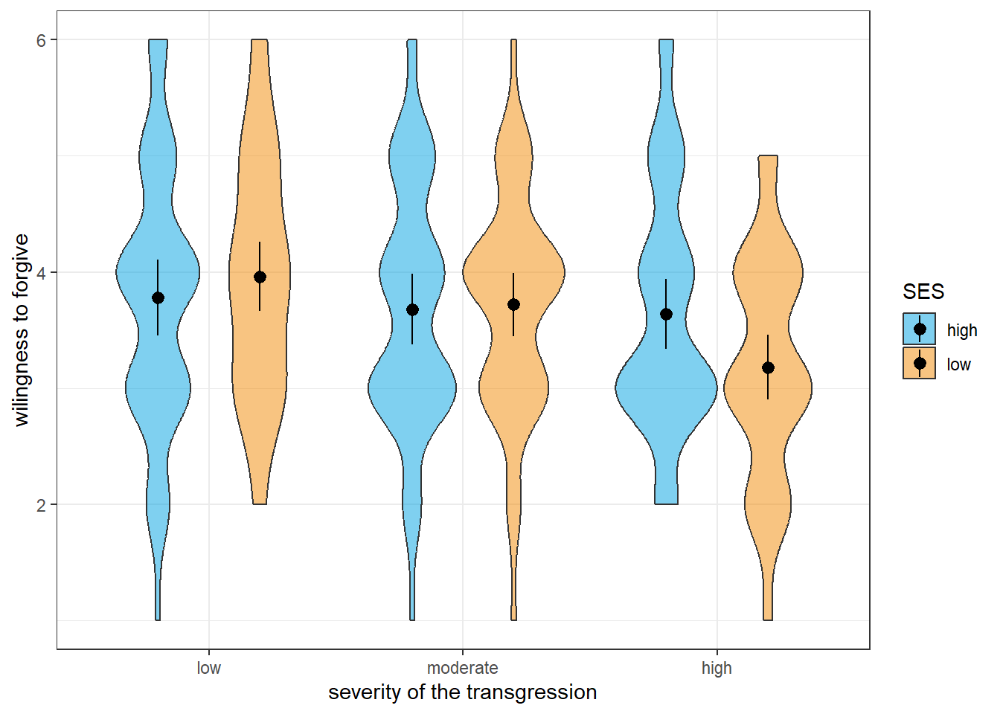
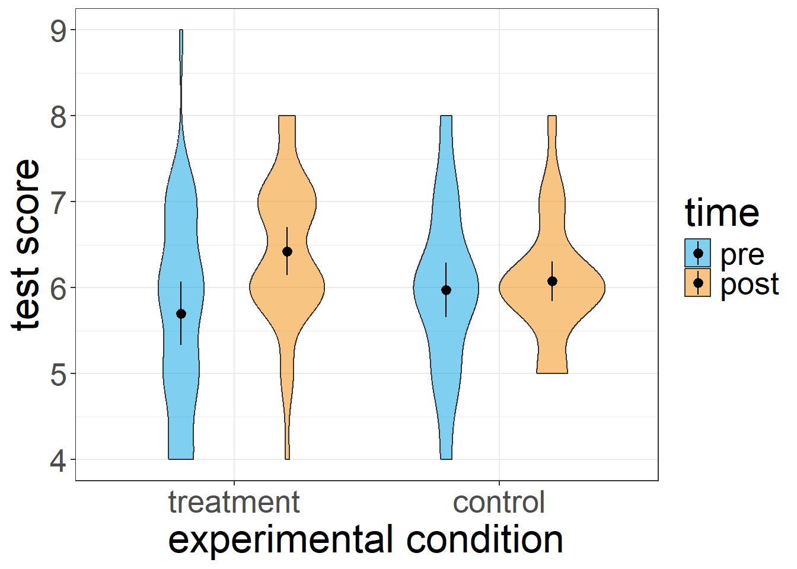

ID difficulty performance
1 1 easy 2.1646466
2 1 moderate 0.7448755
3 1 hard 1.3471731
4 2 easy 2.0451407
5 2 moderate -0.2245538
6 2 hard -1.2001469Repeated measures and mixed ANOVAs
So far, we have covered ANOVAs for designs, in which the explanatory variables varied between subjects. We will now turn to cases, in which all or at least some of these factors vary within subjects. Although these cases are a little more complicated, they follow the same logic of taking the overall variance of the outcome of interest and partitioning it.
In a repeated measures ANOVA (also sometimes referred to as within-subjects ANOVA), we are interested in whether there are mean differences between two or more variables measured among the same participants. This could be the same variable we measure at different times, for example when we are interested in changes over time, or responses to different questions we asked our participants, for example how much they like various colours.
One-factorial repeated measures ANOVA
The one-factorial case of the repeated measures ANOVA is an extension of the paired \(t\)-test. The difference to the one-factorial between-subjects ANOVA is that each participant provides a response at all levels of the within-subjects factor (if at least one of the responses is missing, that participant is lost for the analysis). The question now is how to partition the variance of the observations or - to be more precise - the corresponding sums of squares.
In a first step, we can partition the total sum of squares into variability between participants and variability within participants:
\[SS_{total} = SS_{betweenP} + SS_{withinP}\]
Here, \(SS_{betweenP}\) represents variability that we can attribute to idiosyncrasies of our participants, meaning that participants differ systematically in their responses. Depending on what we are investigating the reasons for such systematic differences could be inter-individual differences in terms of personality, gender, education, or general cognitive ability. They could also stem from differences in task-related aptitude or current motivational or affective states. Whatever the reasons, if there is variation between participants, we can state that, averaged across all levels of our factor, some participants have higher or lower levels in our outcome variable than others.
In most cases, we are more interested in variability within participants represented by the \(SS_{withinP}\). The reason is that this variability contains not only the measurement error (i.e., unsystematic or unexplained variability of responses each participants provides), but also systematic variability between the levels of our within-subjects factor. This means that we can further partition the \(SS_{withinP}\) as follows:
\[SS_{withinP} = SS_{betweenC} + SS_{error}\] Here, \(SS_{betweenC}\) represent the part of the total variability of \(X\) that we can attribute to the variation of our within-subjects factor. This is what we are ultimately interested in when we run a repeated measures ANOVA. The error term \(SS_{error}\) accordingly includes all variability that we cannot attribute to the variation in the within-subjects factor. In sum, we can partition the total sum of squares as follows:
\[SS_{total} = SS_{betweenP} + SS_{betweenC} + SS_{error}\] The first step is to compute the total sum of squares. We do so by collapsing across all participants \(i\) and all \(j\) levels of the within-subjects factor \(A\). Thus, our total sum of squares looks as usual:
\[SS_{total} = \sum_{i=1}^{N} \sum_{j=1}^{J} (x_{ij} - \bar{x})^2\]
We next compute the \(SS_{betweenP}\), for the sake of completeness. Technically, we do not really need it because the information we are actually interested in lies completely within participants. In order to compute the \(SS_{betweenP}\), we pretend that there is no more variability within participants. We can so by replicate each participants’ responses by their mean across all factor levels. That is, we pretend that a participant always responds with the exact same score on all measurements.
\[SS_{betweenP} = J\sum_{i = 1}^{N}(\bar{x}_i-\bar{x})^2 \]
Here, \(J\) is the number of factor levels and \(N\) is the sample size.
We next compute the \(SS_{withinP}\). Since we are only interested in how much variation there is in the various responses participants provided, we must pretend that there is no more variability between participants. We do so by substituting the grand mean \(\bar{x}\) with each participant’s own mean response across all factor levels \(\bar{x_i}\):
\[SS_{withinP} = \sum_{i=1}^{N}\sum_{j=1}^{J}(x_{ij}-\bar{x}_{i})^2\] Here, \(N\) is again the sample size, \(J\) is the number of factor levels, \(X_{ij}\) is the response of the \(i\)th participant to the \(j\)th level of our factor, and \(\bar{x_i}\) is the mean response of the \(i\)th participant across all factor levels.
Now that we have computed the \(SS_{withinP}\), it is time to compute the variability in our data that is attributable to the variation of our factor, namely \(SS_{betweenC}\). We compute is in the same fashion in which we computed the \(SS_{between}\) in the one-factorial case, that is, we substitute each individual response within one factor level by the respective mean response.
\[SS_{betweenC} = N\sum_{j=1}^{J}(\bar{x}_j-\bar{x})^2\] Here, \(N\) is the sample size, \(J\) is the number of factor levels, \(\bar{x}\) is the grand mean, and \(\bar{x_j}\) is the cell mean for the \(j\)th factor level.
Now that we know both the variability within participants \(SS_{withinP}\) and that part of it that we can attribute to variability in our factor \(SS_{betweenC}\), we can compute \(SS_{error}\) via simple subtraction:
\[SS_{error} = SS_{withinP} - SS_{betweenC}\].
We can now compute the \(F\)-statistic that will tell us whether the variability between the factor levels is large enough to constitute a significant effect. To do so, we compute the \(MS_{betweenC}\) and \(MS_{error}\) by dividing the respective sums of squares by their degrees of freedom and then take their ratio:
\[\frac{MS_{betweenC}}{MS_{error}} = \frac{\frac{SS_{betweenC}}{J-1}}{\frac{SS_{error}}{(J-1)\times(N-1)}} = F_{J-1;(J-1)\times{(N-1)}}\] Just as in the between-subjects case, we can now test whether the within-subjects factor, let’s call it \(A\), has an effect on the outcome variable. Remember that:
\(\alpha_j = \mu_j - \mu\)
This means that the effect of the \(j\)th level of factor \(A\), \(\alpha_j\) is the difference between the true group mean \(\mu_j\) and the true grand mean \(\mu\).
Just as in the between-subjects ANOVA, the Null hypothesis is that all \(\alpha_j\) are zero (i.e., all cell means are equal). The alternative hypothesis is that not all group means are equal or, put differently, that at least one of the \(\alpha_j\) is non-zero.
\(H0:\alpha_j = 0 \quad \forall j\)
\(H1: \lnot H_0\)
Running a repeated measure ANOVA in R
Since we already know how to run between-subjects ANOVAs in R, it is fairly easy to run a repeated measures ANOVA. We will use the same package and function we used for the between-subjects ANOVAs, namely the aov_ez() function from R package * afex*. The only difference is that we will use the function argument wihtin instead of between to tell R the name of our within-subjects factor.
As always, we need some data first. Let’s assume that we ran a study with a within-subjects design, in which 30 participants worked three memory tasks that only differ in difficulty (let’s assume that we counterbalanced the order so we do not need to concern ourselves with order effects). In other words, we have a within-subjects factor called “difficulty” with three levels, and we can now test whether participants’ task performance differs according this factor. We will call the data frame containing the data df1. Here is what the data looks like.
We can now run the repeated measures ANOVA using the following syntax:
# load the library afex
library(afex)
# run the ANOVA and save it as a new object
aov1 = aov_ez(id = 'ID', dv = 'performance',
within = 'difficulty', data = df1)
# return the result of the ANOVA
aov1If we run the code above, R will produce the following output in the console:
Anova Table (Type 3 tests)
Response: performance
Effect df MSE F ges p.value
1 difficulty 1.91, 55.25 0.49 27.22 *** .255 <.001
---
Signif. codes: 0 '***' 0.001 '**' 0.01 '*' 0.05 '+' 0.1 ' ' 1
Sphericity correction method: GG The information is similar to the one we got in the between-subjects case, that is, R displays the name of our factor, \(F\)-statistic and its degrees of freedom, an estimate of the effect size \(\eta_2\), and the \(p\)-value.
Note that the analysis yields fractional degrees of freedom that are slightly lower then the ones we would have expected based on the descriptions above. The reason is that the aov_ez() function corrects for violations of the sphericity assumption per default using the Greenhouse-Geisser method.
As you may recall, sphericity is one of the assumptions we make in order for repeated measures ANOVAs to provide meaningful results. Sphericity means that the variances of all pairwise differences of our factor levels are equal. In a design with a three-level factor, this means that we have three possible differences: \(\Delta_{1;2}\) is the difference between factor levels 1 and 2, \(\Delta_{1;3}\) is the difference between factor levels 1 and 3, and \(\Delta_{2;3}\) is the difference between levels 2 and 3. The assumption of sphericity in this case states that if we computed the variances of each of the \(\Delta\)a, they would all be equal.
Often, people test whether this assumption is violated and decide only to control for its violation when the respective test does not justify retaining the Null hypothesis that the variances of the pairwise differences between factor levels are equal. However, similar to the paired \(t\)-test, R takes a different approach and corrects the degrees of freedom for non-sphericity unless we explicitly ask it not to.
Generally speaking, there is no reason to turn off the default Greenhouse-Geisser correction. However, in some cases, we may want to run the ANOVA without correcting for egocentricity (for example, when trying to reproduce results of published studies), or we may want to change the correction method to the Huynh-Feldt method.
We can change the default for the correction of non-sphericity using function argument of the aov_ez() function called anova-table. This argument is a list that allows us to change several aspects of the ANOVA, but for now we only need to define one parameter in that list called correction, which is a character string indicating how we want to correct for non-sphericity in an aNOVA with at least one within-subjects factor. It defaults to “GG” (Greenhouse-Geisser method), but we can alternative set it to “none” (no correction) or HF(Huynh-Feldt method).
Let’s say we want to turn off the non-sphericity correction. Here is what the syntax looks like:
# load the library afex
library(afex)
# run the ANOVA and save it as a new object;
# also turn off correction for non-sphericity
aov1b = aov_ez(id = 'ID', dv = 'performance',
within = 'difficulty', data = df1,
anova_table = list(correction = 'none'))
# return the result of the new ANOVA
aov1bAs we can see in the console, the degrees of freedom now match the ones stated above. Since the violation of sphericity was not severe in the first place (we can see this from the corrected degrees of freedom being very close to the uncorrected ones), the results remain qualitatively similar.
Anova Table (Type 3 tests)
Response: performance
Effect df MSE F ges p.value
1 difficulty 2, 58 0.47 27.22 *** .255 <.001
---
Signif. codes: 0 '***' 0.001 '**' 0.01 '*' 0.05 '+' 0.1 ' ' 1Disentangling significant effects in repeated measures ANOVAs
As in the between-subjects case, a significant effect in a repeated measures ANOVA becomes difficult to interpret without further analysis once we have three or more factor levels. The simple conclusion that “not all means are equal” is rarely satisfactory. Therefore, we need to investigate where exactly the mean differences originate using post-hoc comparisons.
The good news is that it works pretty much in the same fashion as it does for between-subjects ANOVAs. That is, we can use the emmeans() function from the emmeans package to test pairwise comparisons or custom contrasts for statistical significance. If we were, for example, interested in the pairwise comparisons, the syntax would look as follows:
# load the library emmeans
library(emmeans)
# compute pairwise comparisons for the within-subjects factor
emmeans(aov1, specs = 'difficulty',
contr = 'pairwise', correction = 'tukey')Note that since ‘tukey’ is the default for the correction argument, we could have omitted it. Now let’s have a look at the console output.
$emmeans
difficulty emmean SE df lower.CL upper.CL
easy 1.1221 0.148 29 0.820 1.424
hard -0.0738 0.177 29 -0.435 0.288
moderate 0.9778 0.181 29 0.608 1.347
Confidence level used: 0.95
$contrasts
contrast estimate SE df t.ratio p.value
easy - hard 1.196 0.160 29 7.472 <.0001
easy - moderate 0.144 0.194 29 0.743 0.7402
hard - moderate -1.052 0.175 29 -6.006 <.0001
P value adjustment: tukey method for comparing a family of 3 estimates One thing is worth noting here: other than in the between-subjects case, the post-hoc contrasts do not benefit from increased degrees of freedom. Instead, they are equivalent to simple paired \(t\)-tests. The reason is that, here, we already use information from all available participants when estimating the error term of the pairwise comparisons.
Repeated measures ANOVAs with multiple factors
Just as in the between-subjects case, we can run a repeated measures ANOVA with two or more within-subjects factors. Here, we will focus on the two-factorial case, but from there, we can easily extrapolate to more complex designs.
If we have two within-subjects factors \(A\) and \(B\), systematic variance between conditions can stem from the main effects of these factors or their interaction. As such, we can decompose the variability between conditions represented by \(SS_{betweenC}\) as follows:
\[SS_{betweenC} = SS_A + SS_B + SS_{A \times B}\] The test logic is, again, similar to that of the two-factorial between-subjects ANOVA, that is, we can test the two main effects and the interaction effect for statistical significance using \(F\)-ratios. To do so, we first need to compute the \(MS\) of the effect we are interested in as the ratio of its \(SS\) and its degrees of freedom, and the divide this \(MS\) by the \(MS_{error}\) which we compute in the exact same way as we did in the one-factorial repeated measures ANOVA (see above).
Using that approach, we can test: \(H_{0_A}\) (all marginal means of factor A are equal), \(H_{0_B}\) (all marginal means of factor B are equal), and \(H_{0_{A \times B}}\) (the combination of \(A\) and \(B\) has no effect beyond the the respective main effects of \(A\) and \(B\)).
Running two-factorial repeated measures ANOVAS in R
Before we can look at the code for a two-factorial repeated measures ANOVA, we need some data. Let’s assume we ran an experiment studying 50 participants’ willingness to forgive a transgression by another person in a fictional situation on a scale from 1 (not at all) to 6 (certainly). Let’s further assume that we manipulate two variables: the severity of the transgression (low, moderate, or high) and the apparent socio-economic status (SES) of the other person (low vs. high). This leaves us with a \(2 \ times 3\) within-subjects design. Here is an excerpt of some simulated data for this study which are contained in the data df2.
ID severity SES forgive
1 1 low high 3
2 2 low high 3
3 3 low high 3
4 4 low high 3
5 5 low high 3
6 6 low high 4We can now run the two-factorial repeated measures ANOVA using the aov_ez() function. Since we have two within-subjects factors, we need to feed the function a character vector containing both factor’s names as the within argument. here is what the code looks like:
# run a two-factorial within-subjects ANOVA
aov2 = aov_ez(id = 'ID', within = c('severity', 'SES'),
data = df2, dv = 'forgive')
# display the ANOVA results
aov2Once we run the code above, here is what appears in the console as output:
Anova Table (Type 3 tests)
Response: forgive
Effect df MSE F ges p.value
1 severity 1.93, 94.57 0.53 10.57 *** .032 <.001
2 SES 1, 49 0.34 1.40 .001 .243
3 severity:SES 1.55, 76.13 0.81 4.47 * .017 .022
---
Signif. codes: 0 '***' 0.001 '**' 0.01 '*' 0.05 '+' 0.1 ' ' 1
Sphericity correction method: GG As we can see, the ANOVA table R returns contains information on the two main effects and the interaction. For the two significant effects, the main effect of the severity of the transgression and the interaction of severity and SES, we can also see that the aov_ez() function adjusted the degrees of freedom to adjust non-sphericity. There is no such adjustment for the main effect of SES because it has only two levels (if we wanted to turn the adjustment off or set it to the Huynh-Feldt method, we could do it using the anova_table argument, see above).
Disentangling effects in a two-factorial repeated measure ANOVA
Similar to the between-subjects case, how we go about disentangling the effects in a two-factorial repeated measure ANVOA depends critically on whether the interaction was statistically significant. Remember that, as general rule, we should only interpret main effects if there is either no evidence of an interaction in our analysis or if the interaction is ordinal.
Let’s have a look at the results using a violin plot (the black dots show the means for each condition while the lines behind them represent the 95% confidence intervals):

The graphical inspection already suggests that we do not have an ordinal interaction, which means that we should focus on the interaction when interpreting the results and not interpret the main effect of severity. Of course, we could also run a statistical analysis instead of the visual inspection by checking for each level of the severity factor whether there is a significant effect of SES in the same direction.
We can do that using the emmeans() function. However, we will use the specs argument in a slightly different way. Instead of defining it as a character vector containing our two factors, we will define it as a formula. Specifically, we will tell the emmeans() function to compare the means of the factor for which the ANOVA yielded a significant main effect (severity) separately for each level of the other factor (SES). Here is that the syntax looks like:
# obtain pairwise comparisons for SES for each level of severity
emmeans(object = aov2, specs = ~ severity|SES,
contr = 'pairwise', adjust = 'tukey')Here, R will know that we enter a formula when specifying the specs argument because we lead with a tilde operator (~). The rest of the definition of specs reads as SES by severity. Now let’s have a look at the output:
$emmeans
SES = high:
severity emmean SE df lower.CL upper.CL
low 3.78 0.162 49 3.45 4.11
moderate 3.68 0.152 49 3.37 3.99
high 3.64 0.151 49 3.34 3.94
SES = low:
severity emmean SE df lower.CL upper.CL
low 3.96 0.148 49 3.66 4.26
moderate 3.72 0.134 49 3.45 3.99
high 3.18 0.139 49 2.90 3.46
Confidence level used: 0.95
$contrasts
SES = high:
contrast estimate SE df t.ratio p.value
low - moderate 0.10 0.188 49 0.532 0.8559
low - high 0.14 0.157 49 0.894 0.6463
moderate - high 0.04 0.143 49 0.280 0.9577
SES = low:
contrast estimate SE df t.ratio p.value
low - moderate 0.24 0.166 49 1.450 0.3237
low - high 0.78 0.129 49 6.061 <.0001
moderate - high 0.54 0.115 49 4.694 0.0001
P value adjustment: tukey method for comparing a family of 3 estimates As usual, calling the emmeans() function yields two tables, one containing the means (in this case the means of each level of SES for each level of severity), and another containing the contrast tests we asked for. In our case, there are three contrasts for each level of SES since we run pairwise comparisons on a three-level factor (severity). As we can see, the severity of the transgression has statistically significant effects only when SES is low. Here, the willingness to forgive is higher when severity is low as compared with highly severe transgressions or when it is moderately severe instead of highly severe. Since the corresponding comparisons are not significant for high SES, we cannot say whether there is a true main effect of severity. That is, the statistical analysis confirms the graphical analysis and tells us not to interpret the main effect of severity.
In the example above, we chose the Tukey’s method to adjust for multiple comparisons. Note, however, that the emmeans() function did not adjust for six test even though we ran six tests in total.
Instead, the function adjusted for three tests in each fo the two sets of tests. The same would have happened had we chosen a different adjustment method such as Bonferroni’s method.
What this means is that we need to consider that this way of adjusting for multiple comparisons is more liberal than correcting for all tests we ran post-hoc.
If we wanted to adjust for all tests, the most straightforward approach would be to specify the contrasts we are interested in manually by feeding the contr argument a list of vectors containing the contrast weights.
Now that we know that there is an interaction in our data that is not ordinal, we know that we should not interpret the main effects. We do, however, need to understand the nature of the interaction effect. We already know something about the interaction because we ran pairwise comparisons of the three levels of our severity factor for each level of SES.
We can now run the complementary analysis by testing for differences between the two levels of SES for each level of severity of the transgression. If we do not want to adjust for multiple comparisons, we can use the formula-based approach to specifying the specs argument (since there is only one comparison for each level of severity, the function will not adjust the \(p\)-values). Here is what the syntax looks like:
# run pairwise comparisons of SES for each level of severity
emmeans(object = aov2, specs = ~ SES|severity,
contr = 'pairwise', adjust = 'none')Let’s have a look at the output:
# run pairwise comparisons of SES for each level of severity
emmeans(object = aov2, specs = ~ SES|severity,
contr = 'pairwise', adjust = 'none')As we can see, only one of the comparisons is statistically significant. That is, while we cannot say based on the data whether SES affects the willingness to forgive slightly or moderately severe transgressions, SES makes a difference when transgressions are severe.
Finally, let’s consider the scenario, in which there is no significant interaction between the two within-subjects variables or in which the interaction turns out to be ordinal. In this case, we can actually interpret main effects. This means that we also need to disentangle main effects if the respective variable has more than two levels. We can, once again, do that using the emmeans() function by running pairwise comparisons on the marginal means. To this end, we need to specify the specs argument as the name of the factor we are interested in and omitting the other factor. Let’s do that using the example data (neglecting for a moment that the interaction was not ordinal). Here is what the code would look like:
# run pairwise comparisons on the marginal means of severity of transgressions by collapsing across the two levels of SES
emmeans(object = aov2, specs = "severity",
contr = 'pairwise', adjust ='tukey')Now let’s have a look at the output:
$emmeans
severity emmean SE df lower.CL upper.CL
low 3.87 0.129 49 3.61 4.13
moderate 3.70 0.125 49 3.45 3.95
high 3.41 0.132 49 3.14 3.68
Results are averaged over the levels of: SES
Confidence level used: 0.95
$contrasts
contrast estimate SE df t.ratio p.value
low - moderate 0.17 0.1103 49 1.541 0.2808
low - high 0.46 0.0978 49 4.705 0.0001
moderate - high 0.29 0.0949 49 3.057 0.0099
Results are averaged over the levels of: SES
P value adjustment: tukey method for comparing a family of 3 estimates R tells us that the results of the pairwise comparisons are averaged across the levels of SES, just as we intended. We can see that willingness to forgive is higher for transgression of low or moderate severity when compared with severe transgressions. If there was no interaction in our data or if the interaction was ordinal, we could then conclude that this is a general pattern.
Mixed ANOVAs
We speak of a mixed ANOVA when the research design contains at least one between-subjects factor and at least one within-subjects factor. A very prominent type of studies that fall into this category is the randomised control trial with pre, post, and follow-up measures.
We already know how to partition the variability of our outcome variable \(x\) in both the between-subjects and the within subjects-case. In a mixed ANOVA, we do both of these things. It is almost like running two separate ANOVAs.
To test between-subjects effects, we first compute each subjects average score across all within-conditions. We then compute the sums of squares for all effects and the respective error term in the same fashion as we would in a pure between-subjects design.
In order to test the effects of main effects or interactions of within-subjects effects and within-between-interactions, we focus solely on the variability within participants. We partition this variability just as we would if this were a pure within-subjects design. That is, we treat a within-between-interaction as if it was just another within-subjects factor.
When computing mean squares from the different sums of squares, we need to consider that we have two error terms. For between-effects, this is the variability within the different between-subjects conditions (collapsed across all levels of our within-subjects factors). For within-effects, it is that part of the variability within participants that we cannot account for with our within-effects and within-between-interactions. You will, thus, see two different mean squared errors (MSE) in the ANOVA output of a mixed ANOVA.
Running mixed ANOVAs in R
Running mixed ANOVAs in R is easy. All we need to do feed the aov_ez() function both the between and within arguments. As always, we first need some data for the mixed ANOVA. Let’s say we ran study testing an intervention using a \(2 \times 2\) design with experimental condition (treatment vs. control) as a between-subjects factor and measurement time (pre treatment vs. post treatment) as a within-subjects factor. Here is an excerpt of the data:
ID cond time score
1 1 treatment pre 4
2 2 treatment pre 7
3 3 treatment pre 7
4 4 treatment pre 4
5 5 treatment pre 7
6 6 treatment pre 7Here is what the data looks like if we were to visualise it:

Now that we have some data, we can actually run the mixed ANOVA. Here is the syntax:
# run a mixed 2 by 2 ANOVA and save it as an object
aov2 = aov_ez(id = 'ID', between = 'cond',
within = 'time', dv = 'score',
data = df2)
# show the results in the console
aov2Once we run that code, we will get the following console output:
Contrasts set to contr.sum for the following variables: condAnova Table (Type 3 tests)
Response: score
Effect df MSE F ges p.value
1 cond 1, 78 1.26 0.04 <.001 .833
2 time 1, 78 0.56 12.12 *** .046 <.001
3 cond:time 1, 78 0.56 6.96 * .027 .010
---
Signif. codes: 0 '***' 0.001 '**' 0.01 '*' 0.05 '+' 0.1 ' ' 1As we can see, the output contains three effects, the two main effects and the within-between interaction. Note also that the between-subjects effect of “condition” uses a different error mean squares (based on the variability between subjects) that the within-subjects effect os “time” and the interaction term (which is based on the within-subject variability).
Disentangling effects in mixed ANOVAs
Let’s quickly think back on the two-factorial between-subjects ANOVA. Remember what we said about disentangling effects when ANVOAs have more than one factor? The bottom line was: which effects we are going to interpret and, thus, need to disentangle, depends on the interaction effect. We should only interpret significant main effects if a) there is no evidence of an interaction, or b) the interaction is ordinal.
If we have a significant interaction, we first need to find out how exactly it looks. One way to go about this is using pairwise comparisons on all cells. However, this can get messy with large designs simply because the number of possible pairwise comparisons increases exponentially with the number of a design’s cells. Alternatively, we could manually specify post-hoc contrasts to get exactly those contrasts we are interested in. Of course, this can be tedious with large designs, and it is somewhat error prone if we need to enter large numbers of vectors containing contrast weights.
The good news is that there is another elegant way to run analyses of the simple effects behind an interaction, namely providing the emmeans() function with a formula when defining the specs argument.
Generally speaking, when we use a formula to specify specs we are telling the function to run certain contrasts on one variable (or even more than one) for each level of another (or for each combination of several others). Here is what the syntax looks like in the case of simple effects:
# run pairwise comparisons for the between-factor
# 'cond' for each level of the within-factor 'time'
emmeans(object = aov2, specs = ~ cond | time,
contr = 'pairwise', adjust = 'none')You can read the formula we fed the emmeans() to define its spec argument as follows: run contrasts on “cond” for each level of “time”. Which contrasts to run is, once again, specified using the contr argument, in our case pairwise comparisons.
Let’s have a look at the console output:
time = pre:
contrast estimate SE df t.ratio p.value
treatment - control -0.275 0.242 78 -1.136 0.2593
time = post:
contrast estimate SE df t.ratio p.value
treatment - control 0.350 0.180 78 1.944 0.0555As we can see, the output tells us which effect the experimental condition (treatment vs. control) has for each time point (pre. vs. post). Here, we can only confirm an effect after the treatment (post), but our data do not allow conclusions before treatment (pre).
In order to get the full picture of the interaction, we also need to inspect the effect of time by condition. To this end, we simply switch the two variables in our formula specification of specs (see syntax below).
# run pairwise comparisons for the between-factor
# 'cond' for each level of the within-factor 'time'
emmeans(object = aov2, specs = ~ time | cond,
contr = 'pairwise', adjust = 'none')cond = treatment:
contrast estimate SE df t.ratio p.value
pre - post -0.725 0.168 78 -4.327 <.0001
cond = control:
contrast estimate SE df t.ratio p.value
pre - post -0.100 0.168 78 -0.597 0.5523As we can see, there is only an effect of the time at which we measure the dependent variable when there is a treatment in between (which we would probably expect in this kind of research design). We cannot say, however, whether there is any change in the dependent variable for participants in the control group since the respective simple effect is not statistically significant.
Caveat: Doing post-hoc contrasts in this fashion imposes a restriction on the adjustment of \(p\)-values for multiple comparisons. R will not adjust for all tests, but for all comparisons within a level of the grouping variable.
In our example, we would not interpret the main effect of “time” because we have a semi-disordinal interaction. That is, we cannot say that “time” has a general impact on the dependent variable, and we would also not claim that experimental condition has a general effect. Whether they have an effect seems to depend on the level of the respective other variable (thus, the significant within-between interaction in the ANOVA).
In addition, since we have only two factor levels for “time”, there would be no need to disentangle the effects (we could just look at the means to infer the direction of the effect). If we were interested in disentangling a main effect, however, we could do it using emmeans() just like we did it in the case of the two-factorial between-subjects ANOVA.
In order to disentangle a main effect, we need to run pairwise comparisons on its marginal means (i.e., the means when collapsing across the levels of other factors). We can do so by feeding the emmeans() function only the factor of interest when defining specs (omitting the other factors).
# disentangle the main effect of time
emmeans(object = aov2, specs = 'time',
contr = 'pairwise', adjust = 'none')Here is wehat appears in the console once we run that code:
$emmeans
time emmean SE df lower.CL upper.CL
pre 5.84 0.121 78 5.60 6.08
post 6.25 0.090 78 6.07 6.43
Results are averaged over the levels of: cond
Confidence level used: 0.95
$contrasts
contrast estimate SE df t.ratio p.value
pre - post -0.412 0.118 78 -3.482 0.0008
Results are averaged over the levels of: cond When looking at the effect of time, the analysis reveals a difference between the two marginal means pre and post treatment (this is equivalent to the main effect of time in the ANOVA since we have only got two factor levels). Conveniently, the output also reminds us that these are marginal means by stating that results are averaged across the levels of our other factor “cond”.